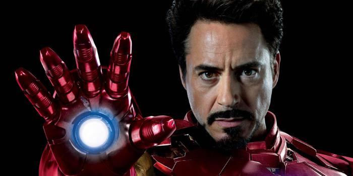
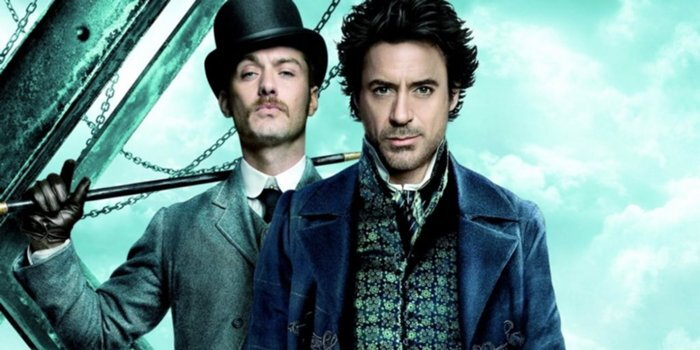
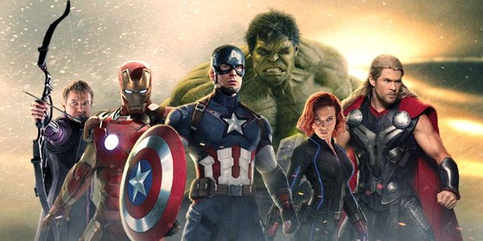

Фотографии Роберта Дауни младшего
Знаменитые фильмы


Шерлок Холмс
Величайший в истории сыщик Шерлок Холмс вместе со своим верным соратником Ватсоном.
Подробнее
Краткая биография
Роберт Дауни младший родился 4 апреля 1965 года в Нью-Йорке в семье режиссёра и актрисы. Его отец, Роберт Дауни старший, был известным режиссёром и актёром экспериментального кино, а мать, Элси Энн Форд, актрисой. С самого детства Роберт был окружён творческой атмосферой, и уже в пятилетнем возрасте он дебютировал в фильме своего отца "Загадка Палмера".
В юности Дауни столкнулся с серьёзными жизненными трудностями, связанными с зависимостью, которые на протяжении многих лет мешали его карьере. Несмотря на это, он смог восстановить свою репутацию и вернуться в Голливуд, доказав свой талант.
Настоящий прорыв произошёл в 2008 году, когда он получил роль Тони Старка (Железного человека) в фильме студии Marvel. Эта роль не только превратила его в одного из самых высокооплачиваемых актёров Голливуда, но и помогла ему стать символом франшизы Marvel. Сегодня Дауни считается одной из самых влиятельных персон в кинематографе, и его карьера насчитывает десятки культовых фильмов, таких как "Шерлок Холмс", "Солист" и "Чаплин".
В личной жизни Роберт женат на Сьюзан Дауни, с которой у него двое детей. Дауни активно занимается благотворительностью, поддерживая проекты в сфере здравоохранения и экологии, а также продвигает устойчивое развитие через свои компании.